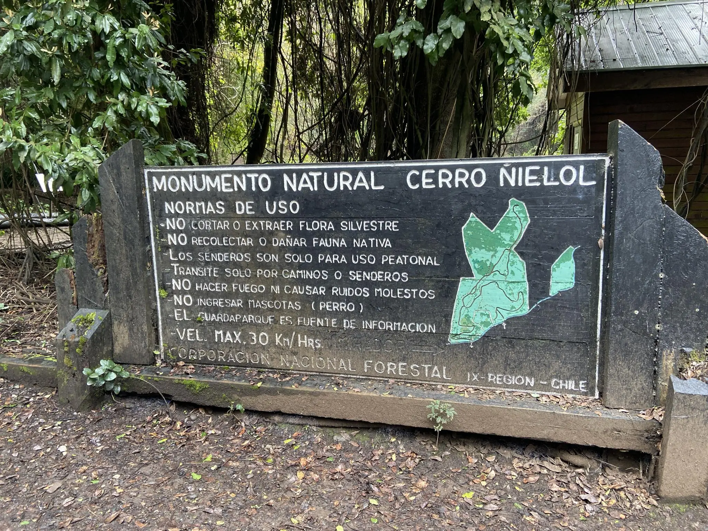

Sendero Ñielol
Duración: 1 hr 30 min · Dificultad: Moderada
Nexus Ecoruta
Turismo Sustentable en La Araucanía
Explora s, ferias agroecológicas y espacios patrimoniales diseñados para un turismo consciente y respetuoso con el medio ambiente.

Duración: 1 hr 30 min · Dificultad: Moderada